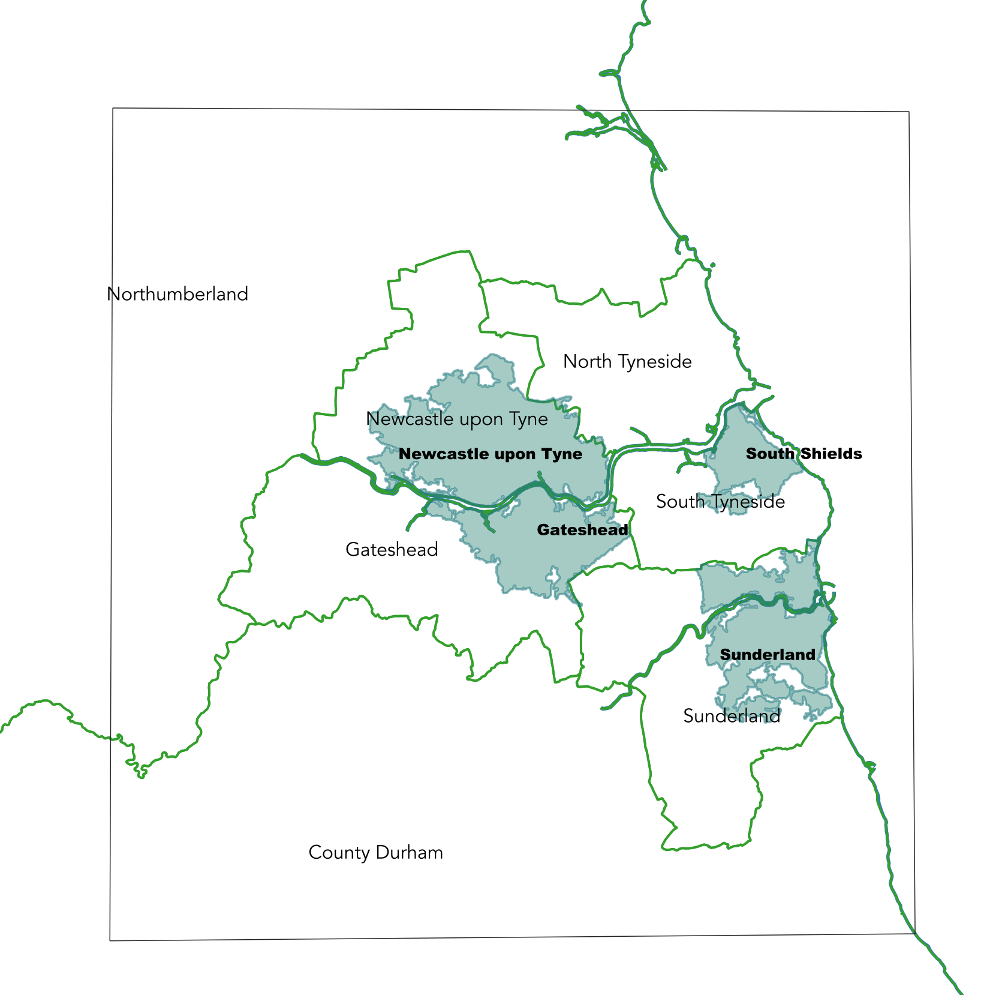

4 Notes
This page is constantly updated on a (almost) daily base, meaning that the order is not dictated by a specific structure, just temporary adding up ideas and development of the project
(NB: in reverse order, that is newer stuff is at the top of the document).
4.1 October
Initial trials
Working on a. mobility based emissions -> IE transport data
&
Building base scenario
- Try to dl/open/visualise SPC data \(\rightarrow\) Note: study case Metropolitan county of Tyne and Wear
- Investigate potentially relevant data from UK Data Services data -> any other relevant dataset?
- How to connect/integrate TUS to SPC dataset
- visualise the integrated dataset -> base scenario
- think “future scenarios”
 The 5 LADs in the Metropolitan County of Tyne and Wear, highlighted are also the 4 major town areas
- OD flows data in SPC is only at MSOA level
4.1.1 Python code
Remember to add in READ_ME a walkthrough.
Using
env.yml\(\dots\) usecondaorpoetry?
4.1.2 Defining relations
We can see the Indicators \(I_{i}\), with \(i = \{1, ..., n\}\), as a function of different land uses \(l_{j}\) where \(j = \{1, ..., k\}\) and \(I_{i}\) can be expressed as generic relation \(\star\) between several \(l_{j}\) weighted by \(k\) generic weights/parameters \(w_{j}\), as follows:
\[I_{i}(l) = w_1^il_{1} \star w_2^il_{2} \dots \star w_k^il_{k}\]
Different indicators can depend on same landuse variables, and per each indicator the scenarios can be expressed by acting on the paramters \(w_{j}\).
As an example, using the definition above the indicator Mobility based emissions (a.) could be expressed as:
\(\textit{mobility based emissions} = w_1trips \star w_2distance \dots \star w_3\textit{CO<sub>2</sub>e emissions factor per mode of transport}\)
\(\dots\) Is this useful??
4.2 September
Exploratory phase
The idea is to focus on a few indicators (one or two) in order generate a methodology to apply to different variables (IE all the rest of indicators)
Concentrating on Indicators for Net-zero a and b:
- mobility based emissions … integration with SPC \(/\) AB-street?
- housing based emissions
4.2.1 Data availability
- Generated list of possible data sources with metadata, resolution, website (when available), etc (local on laptop, not online)
4.2.1.1 a. mobility based emissions
(aggregated at LAD level) UK GHG emissions national statistics, estimates per Local Authority Data for 2005 - 2020 $% this datum is a sum of emissions from 2005-2020, usueful??
we can get from gov.uk CO2e (carbon dioxide equivalent) emissions factors for several occupations and travel modes, including transport, freight, etc link
OD flows from UK census … only to work and home?
check source\(\rightarrow\) YES \(\Downarrow\)get travel to school flow data from Propensity to Cycle Tool PCT?
Location of usual residence and place of work by method of travel to work (…origin destination flows) table WU03UK](https://wicid.ukdataservice.ac.uk/cider/wicid/downloads.php) at LAD level safeguarded data!!
Note: can download all the tables for “Location of usual residence and place of work by method of travel to work” at different levels (LAD to LSOA, though the lattest is not Open data) here https://wicid.ukdataservice.ac.uk/cider/about/data_int.php?type=2
let’s find MSOA data:
nomisweb
WU03BEW(with ‘outside UK’ detailed) safeguarded
WU03EW (with ‘outside UK’ collapsed) open
4.2.1.2 b. housing based emissions
Sub-national electricity and gad consumption data, overview link
one table per year (20105 to 2020) of total consumption at region and LAD levels link
one table per year (2010 to 2020) of total consumption at LSOA or MSOA level link
electricity and gas consumption (kWh) at postcode level (England, Scotland, Wales), one table per year, 2013,2015-2020 Experimental
electricity consumption data for 2005 to 2020 as a single table, with years stacked one above the other stacked data
- analogous links for gas consumption
4.2.1.3 People behavior
People behavior and time use from The UK Time Diary Study 2014 - 2015 - UK Time Use Survey carried by NatCen and available from UK Data Service
what we can get from this source: time people spend in different activities, mode of transport (yes?)
4.2.2 Did someone already do this?
Project from Malcom Morgan (Univ of Leeds) …
The PBCC estimates the average carbon footprint per person for each LSOA in England
NOTE:
cool project, GitHub code available but not reproducible (?)
opened issue here https://github.com/creds2/CarbonCalculator/issues/6
4.3 Open questions
And plausible answer
what is the Research Question \(\rightarrow\) What are the “best” values in the parametrisation of the land use variables? Could we train the computer to predict these values?
Resolution
LSOAS/MSOAS ? feedback from Dani regarding SS: SS gives conversion to LSOAs \(\Downarrow\)Does it make sense to use SPC (individuals’ level data) as we aggregate at MSOA level? What variables are meaningful when aggregated?
type of output - map, web …
MapBoxMapLibre GL, Leaflet, …how to generate scenarios - ideas: change parameters’ range/values, run ABstreet simulations…?
how turn on/off scenarios in the visualisation- different layers in the map
integrate with SPC - need to integrate more Census variables? feasible?
can we actually build a methodology, given the different range of indicators and data?
importance of localised emissions and need for air-flow modelling … not relevant for GHG
which year to take into consideration for the analysis? (Census, )
4.3.1 Output / map generation
Note: could generate a website via MapLibre, checked the options